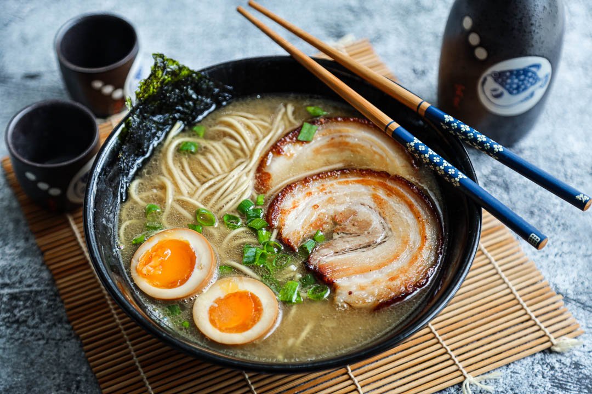

Tonkotsu Ramen

Home
Tonkotsu Ramen is a ramen dish that originated in Kurume, Fukuoka Prefecture, Japan, and is a specialty dish on the island of Kyushu.
The broth for tonkotsu ramen is based on pork bones. It is prepared by boiling the bones in water for up to eighteen hours, at which point the soup becomes cloudy in appearance. Additional broth ingredients can include onion, garlic, spring onions, ginger, pork back fat, pig's trotters, oil, and chicken carcass. The dish is traditionally topped with chāshū (sliced pork belly), and additional ingredients can include kombu, kikurage, shōyu, chili bean paste, and sesame seeds.
The traditional preparation method for tonkotsu ramen is for the noodles to be hard in the center. Some ramen shops allow customers to select the level of firmness, including futsu for regular or standard, harigane for very hard, barikata for al dente, and yawamen for soft. Some restaurants also provide a second order of noodles if requested by the customer, in a system referred to as kaedama.
Ingredients
Tonkotsu Ramen
- 8 cups tonkotsu pork broth
- 12 oz dried ramen noodles
- 4 large/extra large eggs
- 2-3 oz enoki/other mushrooms
- thinly sliced green onions
Chashu Pork Belly
- 2 lb pork belly(rolled/tied)
- 1/4 cup soy sauce
- 1/2 cup sake
- 1/2 cup mirin(sweet japanese wine)
- 1/4 cup sugar
- 2-3 clove garlic(whole)
- 2 green onion)coarsely chopped)
Miso Tare
- 1/2 cup shiro miso
- 1/4 cup sake
- 1/4 cup mirin
- 1-2 tsp kosher salt
Steps
Chashu Pork Belly
- Combine the soy, sake, mirin, sugar, garlic and green onions in a ziploc bag large enough to hold the pork belly. Stick a straw in the bag and seal the ziploc bag up against it (so the straw is the only opening). Suck as much of the air out as you can and seal
- Sous vide the pork for 10-11 hours at 170F
- Remove pork from the ziploc bag. Discard the bag and marinade
- Let the chashu pork belly cool completely
- Slice across the chashu pork (so you get bacon like slices) – into 8-12 slices about 1/8 to 3/16 inches thick. Reserve. You won’t need all the pork for 4 servings
Miso Tare
- Combine all ingredients in a small sauce pan and simmer at the lowest setting for about 5 minutes.
Medium Boiled Eggs
- Bring enough water to cover the eggs to a boil. If you have a way to prick the eggshell do it. Boil large eggs for 6 minutes 30 seconds. If using extra large eggs boil them for 7 minutes 30 seconds. You may have to adjust your times slightly depending on the exact size of your eggs but this should get you pretty close.
- Submerge the eggs in cold or ice water to chill. This stops the egg yolks from continuing to set up. Peel. Cut in half right before you serve your tonkotsu ramen.
Assemble the Tonkotsu Ramen
- Boil the ramen noodles in plenty of water as directed by the packaging. If there’s no translation on the packaging usually its 4 minutes. You don’t need to salt the water.
- Cook the mushrooms along side the noodles – you just want them softened.
- Gently fry the chashu pork in a non-stick skillet until lightly browned.
- Place 1/4 of whichever tare you are using in the bottom of four bowls.
- Ladle in about 1/2 cup of the tonkotsu broth into each of the bowls and stir to mix.
- Add the noodles. Pour in another 1 1/2 cups of the tonkotsu broth per bowl.
- Top with the egg, mushrooms, pork and green onions.